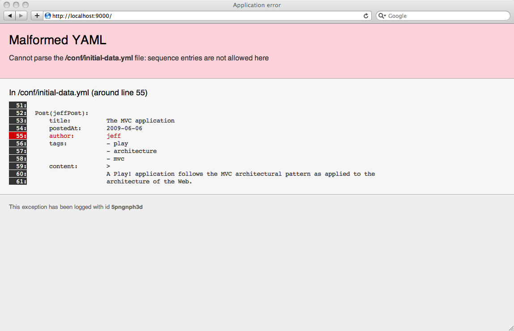
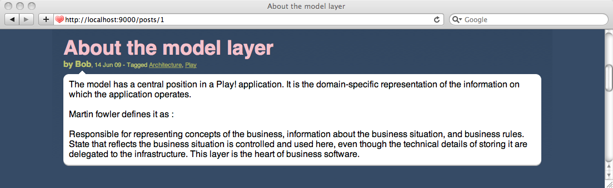

Adding tagging support
As our blog will contain more posts, it will become more and more difficult to retrieve them. To help classify posts by subject we will add tagging support.
The Tag model object
We will add one more object to the blog model definition. The Tag class itself is indeed very simple:
package models;
import java.util.*;
import javax.persistence.*;
import play.db.jpa.*;
@Entity
public class Tag extends Model implements Comparable<Tag> {
public String name;
private Tag(String name) {
this.name = name;
}
public String toString() {
return name;
}
public int compareTo(Tag otherTag) {
return name.compareTo(otherTag.name);
}
}
Because we want something like lazy tag creation we will always get them using the findOrCreateByName(String name) factory method. Let’s add it to the Tag class:
public static Tag findOrCreateByName(String name) {
Tag tag = Tag.find("byName", name).first();
if(tag == null) {
tag = new Tag(name);
}
return tag;
}
Tagging posts
Now it is time to link the new Tag model with the Post model. Let’s add the correct relationship to the Post class:
…
@ManyToMany(cascade=CascadeType.PERSIST)
public Set<Tag> tags;
public Post(User author, String title, String content) {
this.comments = new ArrayList<Comment>();
this.tags = new TreeSet<Tag>();
this.author = author;
this.title = title;
this.content = content;
this.postedAt = new Date();
}
…
Note that we use a TreeSet here in order to keep the tag list in a predictable order (alphabetical order in fact, because of our previous compareTo implementation).
We will keep this relationship unidirectional.
We will also add a bunch of helper methods to make tag management simpler. The first one tags a Post:
…
public Post tagItWith(String name) {
tags.add(Tag.findOrCreateByName(name));
return this;
}
…
The next one retrieves all posts with a specific tag:
…
public static List<Post> findTaggedWith(String tag) {
return Post.find(
"select distinct p from Post p join p.tags as t where t.name = ?", tag
).fetch();
}
…
It is time to write a new test case to test this stuff. Restart the server in test mode by typing:
$ play test
Now add a new @Test to the BasicTest class:
@Test
public void testTags() {
// Create a new user and save it
User bob = new User("bob@gmail.com", "secret", "Bob").save();
// Create a new post
Post bobPost = new Post(bob, "My first post", "Hello world").save();
Post anotherBobPost = new Post(bob, "Hop", "Hello world").save();
// Well
assertEquals(0, Post.findTaggedWith("Red").size());
// Tag it now
bobPost.tagItWith("Red").tagItWith("Blue").save();
anotherBobPost.tagItWith("Red").tagItWith("Green").save();
// Check
assertEquals(2, Post.findTaggedWith("Red").size());
assertEquals(1, Post.findTaggedWith("Blue").size());
assertEquals(1, Post.findTaggedWith("Green").size());
}
Make sure that it works.
A little more difficult now
Well, we won’t use it in our blog right now, but what if we wanted to retrieve posts tagged with several tags? It’s more difficult than it seems.
I give you the needed JPQL query because you will likely use it in several web projects:
…
public static List<Post> findTaggedWith(String... tags) {
return Post.find(
"select distinct p from Post p join p.tags as t where t.name in (:tags) group by p.id, p.author, p.title, p.content,p.postedAt having count(t.id) = :size"
).bind("tags", tags).bind("size", tags.length).fetch();
}
…
The tricky part is that we have to use a having count statement to filter only posts that have exactly all tags from the joined view.
Note that we cannot use the Post.find("…", tags, tags.count) signature here, because tags is already a vararg.
You can test it by adding more checks to the previous test:
…
assertEquals(1, Post.findTaggedWith("Red", "Blue").size());
assertEquals(1, Post.findTaggedWith("Red", "Green").size());
assertEquals(0, Post.findTaggedWith("Red", "Green", "Blue").size());
assertEquals(0, Post.findTaggedWith("Green", "Blue").size());
…
The tag cloud
Where we have tags, we need a tag cloud. Let’s add a method to the Tag class to generate the tag cloud:
public static List<Map> getCloud() {
List<Map> result = Tag.find(
"select new map(t.name as tag, count(p.id) as pound) from Post p join p.tags as t group by t.name order by t.name"
).fetch();
return result;
}
Here we use a handy Hibernate feature that allows us to return a custom object from a JPA query. This results in a List containing a Map for each tag with two keys: tag for the tag name and pound for the tag count.
Let’s test it by adding one more check to our tags test:
…
List<Map> cloud = Tag.getCloud();
assertEquals(
"[{tag=Blue, pound=1}, {tag=Green, pound=1}, {tag=Red, pound=2}]",
cloud.toString()
);
Adding tags to the Blog UI
We can now use the new tagging stuff to add one more way to browse the blog. As always, to work efficiently we need to add a bunch of test tags to our initial data set.
Modify the /yabe/conf/initial-data.yml file to add some tags to the tests posts. For example:
…
Tag(play):
name: Play
Tag(architecture):
name: Architecture
Tag(test):
name: Test
Tag(mvc):
name: MVC
…
And then add them to the post’s declaration:
…
Post(jeffPost):
title: The MVC application
postedAt: 2009-06-06
author: jeff
tags:
- play
- architecture
- mvc
content: >
A Play
…
Add the Tags declaration at the top of the YAML file, because they need to be created before any Post references them.
You need to restart your application to force loading of the new initial data set. Note how Play even tells you about problems in YAML files:

Then modify the #{display /} tag to show the tag set on the full post view. Edit the /yabe/app/views/tags/display.html file:
…
#{if _as != 'full'}
<span class="post-comments">
| ${_post.comments.size() ?: 'no'}
comment${_post.comments.size().pluralize()}
#{if _post.comments}
, latest by ${_post.comments[0].author}
#{/if}
</span>
#{/if}
#{elseif _post.tags}
<span class="post-tags">
- Tagged
#{list items:_post.tags, as:'tag'}
<a href="#">${tag}</a>${tag_isLast ? '' : ', '}
#{/list}
</span>
#{/elseif}
…

The new ‘tagged with’ page
Now we can add a new way to list blog posts by tags. In the #{display /} tag, above, we left the link blank; we will now replace it by a link to the new listTagged action:
…
- Tagged
#{list items:_post.tags, as:'tag'}
<a href="@{Application.listTagged(tag.name)}">${tag}</a>${tag_isLast ? '' : ', '}
#{/list}
…
Create the action method on the Application controller:
…
public static void listTagged(String tag) {
List<Post> posts = Post.findTaggedWith(tag);
render(tag, posts);
}
…
As always we create a specific route to keep the URI clean:
GET /posts/{tag} Application.listTagged
We have a problem because we have an existing route that conflicts with this new one. These two routes will match the same URI:
GET /posts/{id} Application.show
GET /posts/{tag} Application.listTagged
However, because we’ll assume that an id is numeric and a tag is not, we can easily solve the situation using a regular expression to restrict the first route:
GET /posts/{<[0-9]+>id} Application.show
GET /posts/{tag} Application.listTagged
Finally, we just have to create the /yabe/app/views/Application/listTagged.html template that will be used by the new listTagged action:
#{extends 'main.html' /}
#{set title:'Posts tagged with ' + tag /}
*{********* Title ********* }*
#{if posts.size() > 1}
<h3>There are ${posts.size()} posts tagged '${tag}'</h3>
#{/if}
#{elseif posts}
<h3>There is 1 post tagged '${tag}'</h3>
#{/elseif}
#{else}
<h3>No post tagged '${tag}'</h3>
#{/else}
*{********* Posts list *********}*
<div class="older-posts">
#{list items:posts, as:'post'}
#{display post:post, as:'teaser' /}
#{/list}
</div>
-p(note). Next: A basic admin area using CRUD.